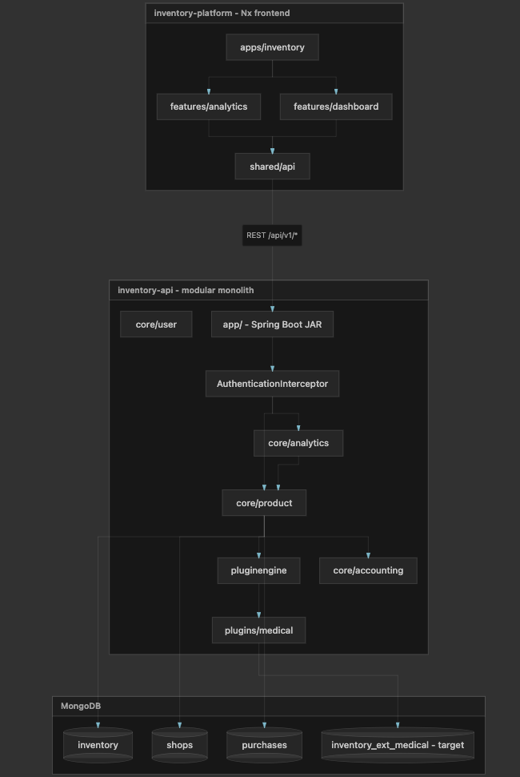

StockKart Vertical Plugin Architecture v4
Implementation guide for multi-vertical inventory (medical, apparel, cafe/F&B, sports, …)
StockKart supports many industries through one platform: minimal core Inventory, per-vertical extension collections (inventory_ext_medical, …), and thin plugins coordinated by InventoryService in the product module. No separate orchestrator layer. No client-sent verticalId — the server resolves it from Shop.verticalId.
1. Overview
Build one inventory platform capable of supporting many industries without:
- Separate applications or duplicate codebases
- A giant
Inventorytable with dozens of nullable vertical columns - JSON-only storage that cannot be searched at scale
- Core code full of
if (vertical == medical)branches
A new vertical (e.g. jewelry with carat, purity, certificateNo) must be addable with minimal impact on existing shops and no changes to Order, Customer, Checkout, or Accounting.
Goals
- Support 10–20+ verticals long-term
- Each shop has different fields, validations, UI, search, and reports
- Keep cart, checkout, accounting, users, pricing universal
- Fast indexed search on vertical-specific fields (expiry, size, sport, …)
- Add verticals additively — existing shops unchanged
Core principles
| # | Principle | Meaning |
|---|---|---|
| 1 | Thin core | Core owns universal concepts only. It must never know expiryDate, size, sport, carat, etc. |
| 2 | Vertical ownership | Each vertical owns schema, validation, search, import, widgets, reports, and its extension storage |
| 3 | Schema-driven UI | Frontend never hardcodes vertical forms; UI is generated from API schema |
| 4 | Indexed search fields | Fields used for search/filter/sort/reports live in indexed extension storage, not unindexed JSON |
| 5 | Additive growth | New vertical = new plugin + new extension collection. Core unchanged |
| 6 | Stable API | Clients call the same endpoints; merged responses hide storage layout |
| 7 | Shop-scoped queries | Every query starts with shopId |
| 8 | Vertical is stable | Chosen at shop creation; switching is a rare admin migration |
Today vs target
Today (baseline)
| Area | Current |
|---|---|
| Backend | pluginengine with stub ProductPlugin; plugins/medical is empty |
| Inventory | Large Inventory document with pharmacy fields (batchNo, expiryDate, …) baked into core |
| Business type | Hardcoded pharmacy assumptions; no Shop.verticalId yet |
| Frontend | Hardcoded forms; businessType: 'pharmacy' on many requests |
| Shop | ShopType (RETAILER / WHOLESALER); no verticalId |
Target (v4)
| Area | Target |
|---|---|
| Shop | verticalId + pluginVersion |
| Inventory (core) | Universal fields only — no vertical columns |
| Vertical data | One extension collection per vertical (e.g. inventory_ext_medical) |
| Plugin engine | Registry, schema loader, extension router |
| Product service | InventoryService — plugin resolution, core + extension coordination |
| Plugins | Schema, validators, SearchProvider, import mappers, widgets |
| Frontend | Dynamic form renderer + lazy-loaded vertical UI packs |
| API | Stable CRUD/search; GET /shops/me/schema drives UI |
2. System architecture

Nx frontend → REST /api/v1/ → Spring Boot → core modules → InventoryService (product hub) → pluginengine / plugins → MongoDB.*
Layer responsibilities
| Layer | Owns | Must NOT own |
|---|---|---|
| Controllers | HTTP, auth context (userId, shopId), DTO mapping | Plugin resolution, Mongo access |
| Module services | Domain logic for that module (profit, checkout, reminders) | Direct cross-module repository calls |
Product / InventoryService | Core inventory CRUD, plugin resolution, txn core+extension, merged inventory views | Vertical-specific business rules (delegates to plugin) |
| Plugin engine | Discover plugins, schema loading | Vertical field definitions |
| Vertical plugin | Schema, extension repo, validators, search, import | Duplicate checkout/cart controllers |
| Frontend pack | Custom widgets (expiry badge, size matrix) | API business logic |
3. Request flow and InventoryService
Rule: Controller → module Service → (often) InventoryService → plugin → repository. Cross-module: Service → Service — never call another module's repository.
Final design (v4): No separate orchestrator or facade classes. The product module is the centre of the application. InventoryService in core/product resolves the vertical plugin from Shop.verticalId and coordinates core inventory with extension storage.
Standard request flow
Frontend
→ API Controller (any module)
→ Module Service (analytics, checkout, reminders, …)
→ InventoryService (product) ← most inventory / vertical flows pass through here
→ PluginRegistry → VerticalPlugin
→ Product InventoryRepository and/or plugin ExtensionRepository
→ merged response| Example | Call chain |
|---|---|
| Register product | InventoryController → InventoryService.create() |
| Profit analytics needing inventory context | ProfitAnalyticsController → ProfitAnalyticsService → InventoryService (batch load / dimensions) |
| Checkout display vertical fields | CheckoutController → CheckoutService → InventoryService.getMergedView() |
| Near-expiry search | InventoryController → InventoryService.search() → plugin SearchProvider |
Controllers stay thin. Plugin resolution never lives in the controller and never trusts a vertical id from the frontend — only authenticated shopId → Shop.verticalId.
Why InventoryService instead of a separate orchestrator
| Concern | Handled by |
|---|---|
| Product is the main domain of StockKart | Existing InventoryService already owns inventory CRUD |
| Resolve plugin from shop | InventoryService loads Shop, calls PluginRegistry.get(verticalId) |
| Split core vs extension payload | Schema-driven split inside InventoryService (or private helpers in same module) |
| Transaction core + extension | InventoryService @Transactional boundary |
| Merged API DTO | InventoryService + VerticalInventoryMapper |
| Avoid extra abstraction layer | One well-known entry point for all modules |
No InventoryWriteOrchestrator, ReadFacade, or SearchFacade — same responsibilities, inside product service.
InventoryService.create() (register / write)
1. Auth → shopId (from controller; set by interceptor)
2. ShopRepository → verticalId, pluginVersion
3. PluginRegistry → VerticalPlugin
4. Split payload: core vs extension (schema storage flags)
5. Validate core fields (existing InventoryValidator)
6. plugin.getInventoryValidator().validate(extensionPayload, shopId)
7. Mongo transaction start
8. InventoryRepository.save(core)
9. plugin.getExtensionRepository().save(inventoryId, shopId, extensionPayload)
10. Commit transaction
11. Post-write hooks (ReminderService, events) — call other module **services**, not their repos
12. Return merged InventoryView / InventoryReceiptResponseInventoryService.getById() / list hydrate (read)
1. InventoryRepository.findByIdAndShopId(id, shopId)
2. PluginRegistry → plugin → extensionRepository.findByInventoryId(shopId, id)
3. Merge (schema-driven); migration fallback → extensionStatus PARTIAL if needed
4. Return flat DTOList views: batch findByInventoryIdIn(shopId, ids) — no N+1.
InventoryService.search() (vertical filters)
1. shopId → Shop → plugin
2. plugin.getSearchProvider().search(shopId, filters, pagination) → inventoryIds
3. Batch load core + extension
4. Merge page; return cursor paginationClients call GET /inventory/search?… — they never know which extension collection ran the query.
Cross-module access
Modules must not reach into each other's repositories directly. Default rule: Service → Service → Repository.
When that would create a Maven circular dependency (A depends on B and B depends on A), use the adapter / facade pattern already in the codebase — same idea as SPI: interface in the consumer module, implementation in the owner module.
┌─────────────────┐ ┌─────────────────┐ ┌──────────────────┐
│ analytics │ │ product │ │ accounting │
│ ProfitAnalytics │ ──────► │ InventoryService│ │ AccountingService│
│ Service │ calls │ │ ◄────── │ │
└─────────────────┘ service└────────┬────────┘ facade └────────┬─────────┘
│ │
▼ ▼
InventoryRepository AccountRepository
(+ plugin ExtensionRepo) (accounting module only)| Rule | Meaning |
|---|---|
| Controller → own module Service | Never skip service layer |
| Module A → Module B (no cycle) | Call B's Service directly |
| Module A ↔ Module B (cycle risk) | Adapter interface in one module, * |
| Service → own Repository | Repos stay inside owning module |
| Product + plugin extension | InventoryService invokes plugin ExtensionRepository via VerticalPlugin — product never imports MedicalInventoryExtension |
| No vertical header from frontend | verticalId from Shop row only |
Breaking circular dependencies (adapter / facade)
Problem: product needs reminders and reminders needs inventory data → cannot have both modules depend on each other's services.
Solution: Consumer module defines a narrow interface. Owner module provides @Component implementation that delegates to its service (or repo for read-only summaries).
┌──────────────────┐ ┌─────────────────────────────┐
│ consumer module │ │ owner module (product) │
│ │ depends on │ │
│ InventoryAdapter│ ◄── interface only │ InventoryAdapterImpl │
│ (interface) │ │ → InventoryRepository │
│ │ │ (or InventoryService) │
│ ReminderService │ │ │
└──────────────────┘ └─────────────────────────────┘
Maven: reminders ✗ product
product → reminders (for interface + DTOs only)| Pattern | Interface (consumer / API module) | Implementation (owner) | Delegates to |
|---|---|---|---|
| Inventory for reminders | reminders.service.InventoryAdapter | product.service.InventoryAdapterImpl | InventoryRepository |
| Shop for user / auth | user.service.ShopServiceAdapter | product.service.ShopServiceAdapterImpl | ShopService |
| Shop for plan / usage | plan.service.ShopProvider | product.config.ShopProviderImpl | ShopService |
| Pricing for product | pricing.service.InventoryPricingAdapter | pricing.service.InventoryPricingAdapterImpl | PricingService |
| Ledger postings | accounting.api.AccountingFacade | accounting.service.AccountingFacadeImpl | accounting services |
| Credit bridge | credit.service.CreditChargeFacade | product.service.AccountingCreditChargeFacade | AccountingFacade |
Rules for adapters
| Do | Don't |
|---|---|
| Keep interface small — only what the consumer needs | Expose full entity graphs or repositories |
Implementation lives in the owning module (product, accounting, …) | Put *Impl in the consumer module |
| Prefer delegate to Service inside impl | Caller reaches foreign Repository directly |
Use @Autowired(required = false) in consumer when optional (existing pattern in InvitationService) | Fail startup when adapter missing if module always present |
| Return DTOs / summaries, not Mongo entities across modules | Leak Inventory entity into reminders/analytics |
Example (existing — reminders ← product):
// core/reminders — interface only, no product dependency
public interface InventoryAdapter {
ReminderInventorySummary getInventorySummary(String inventoryId);
boolean inventoryExists(String inventoryId);
}
// core/product — implementation
@Component
public class InventoryAdapterImpl implements InventoryAdapter {
@Autowired private InventoryRepository inventoryRepository;
// maps to ReminderInventorySummary
}Target v4: analytics and plugins without cycles
| Scenario | Approach |
|---|---|
| Analytics needs inventory + vertical dimensions | Preferred: analytics → product dependency already exists → call InventoryService.getMergedView() / resolveDimensions() directly (no cycle) |
| Product must not depend on analytics | Never import analytics from product; use events if product needs to notify analytics later |
| Reminders need inventory after plugin migration | Extend InventoryAdapter (or add methods) in reminders; implement in InventoryAdapterImpl using InventoryService merge + plugin — reminders still does not depend on plugin types |
| Two modules both need each other | Extract shared interface + DTOs into consumer (or common if truly shared); one @Component impl in owner |
Do not add product → analytics → product. If both directions are ever required, introduce an InventoryReadAdapter interface in analytics (or common.api) and implement it in product — same pattern as InventoryAdapter.
Examples
| Caller | Correct | Wrong |
|---|---|---|
ProfitAnalyticsService needs inventory / vertical dimensions | InventoryService.resolveDimensions(shopId, ids) — or InventoryReadAdapter if cycle | InventoryRepository from analytics |
ReminderService needs batch/expiry label | InventoryAdapter.getInventorySummary() → impl uses merge/service | Reminders importing inventory_ext_medical |
CheckoutService needs batch/expiry for display | InventoryService.getMergedView(shopId, inventoryId) | Query extension collection from checkout |
InventoryService needs accounting entry on stock-in | AccountingFacade.postVendorPurchaseInvoice(...) | AccountRepository from product |
AuthService needs shop tax info | ShopServiceAdapter.getShopTaxInfo(shopId) | ShopRepository from user module |
PlanService needs shop plan fields | ShopProvider.getShop(shopId) | ShopRepository from plan module |
Analytics, checkout, cart, and reminders delegate inventory + vertical work to InventoryService or an inventory adapter, which alone resolves the plugin.
End-to-end flows
Create inventory
POST /inventory { core fields + extension fields (flat or nested) }
→ InventoryController
→ InventoryService.create()
→ Shop → PluginRegistry → plugin
→ split by schema storage flags
→ validate core + plugin
→ save inventory + inventory_ext_<vertical> (transaction)
→ return merged DTOGet inventory detail
GET /inventory/{id}
→ InventoryController
→ InventoryService.getById()
→ load core + extension
→ merge per schema
→ return DTOSearch (near expiry)
GET /inventory/search?expiryBefore=2026-06-30&qtyMin=1
→ InventoryController
→ InventoryService.search()
→ MedicalSearchProvider queries inventory_ext_medical (indexed)
→ inventoryIds → batch hydrate
→ paginated merged responseAnalytics (profit / inventory)
GET /api/v1/analytics/profit?...
→ ProfitAnalyticsController
→ ProfitAnalyticsService
→ PurchaseRepository (analytics module — own repo OK)
→ InventoryService.resolveDimensions(shopId, inventoryIds) ← product service, not InventoryRepository from analytics
→ aggregate → responseSchema for UI
GET /shops/me/schema
→ shop.verticalId → plugin.getSchema()
→ return JSON
→ frontend renders formsWrite / read / search ownership
This section defines who is responsible for writes, reads, and search so the system stays maintainable as verticals grow.
Guiding rule
InventoryService(product) owns plugin resolution, transactions, and merged inventory views- Other modules call
InventoryService, not product or plugin repositories - Plugins own vertical rules and search strategy
Plugins should not expose their own CRUD controllers for standard inventory flows.
Write responsibility
| Concern | Owner | Notes |
|---|---|---|
HTTP endpoint contracts (POST /inventory, PATCH /inventory/{id}) | Product controller | Stable API for all verticals |
Auth + shop resolution (shopId → verticalId) | Product / InventoryService | Load Shop; never trust client vertical header |
| Transaction boundary | InventoryService | Save core + extension atomically |
| Core inventory persistence | InventoryRepository (product) | inventory collection only |
| Vertical field validation | Plugin | Via InventoryValidator + schema |
| Extension payload mapping | Plugin | Schema/storage-aware mapping |
| Extension persistence call | InventoryService invokes plugin repository | Product controls order + rollback |
| Post-write hooks (reminders, analytics) | Other module services, invoked by InventoryService | Must be idempotent |
Read responsibility
| Concern | Owner | Notes |
|---|---|---|
Detail endpoint (GET /inventory/{id}) | Product controller → InventoryService | Stable contract |
| Core row read | InventoryRepository | From inventory |
| Extension row read | Plugin repository via InventoryService | No direct controller or cross-module repo access |
| DTO merge (core + extension) | InventoryService + mapper | Schema-driven output |
| List hydration | InventoryService | Batch extension reads (findByInventoryIdIn) to avoid N+1 |
Search responsibility
Use a two-layer strategy:
- Default: plugin
SearchProviderexecutes indexed extension queries and returnsinventoryIds InventoryService.search(): batch-hydrates core + extension and returns merged page
| Concern | Owner | Notes |
|---|---|---|
| Parse API filters/pagination | InventoryService | Validate common params |
| Vertical-specific query logic | Plugin SearchProvider | Uses extension indexes |
| Result pagination contract | InventoryService | Cursor/page normalization |
| Response hydration | InventoryService | Batch reads, merged DTO |
Non-negotiable boundaries
- No plugin-owned inventory CRUD endpoints
- No module other than product should call
InventoryRepositoryfor vertical-enriched flows — useInventoryService - No service should hardcode
inventory_ext_medical(or any vertical collection) - No plugin should independently manage transaction scope for standard inventory writes
- All list/search flows must use batch extension loads (no per-row extension lookup)
Why this works
- Product remains the single hub for inventory + vertical behaviour
- Other modules stay decoupled from plugin storage details
- Lets each plugin optimize validation/search internally without leaking collection names to clients
4. Data model
Shop
Shop
├── shopId, name, status, …
├── shopType RETAILER | DISTRIBUTOR | WHOLESALER (how they sell)
├── verticalId medical | apparel | sports | … (what they sell)
├── pluginVersion 1.0.0 (pinned behavior)
└── config { enabledFeatures, overrides } (optional)verticalId determines which plugin is active for the shop.
Inventory (core — universal only)
Inventory
├── id, shopId
├── barcode, name, description
├── quantities / units (received, sold, current, baseUnit, conversions)
├── pricingId, vendorId, location
├── hsn (if used cross-vertical for tax)
├── status ACTIVE | ARCHIVED
├── createdAt, updatedAt
└── (NO batchNo, expiryDate, size, color, sport, carat, …)Other core entities (unchanged)
Customer id, name, phone, email, …
Order id, customerId, total, status, …
Cart, Checkout, Accounting, Pricing — universal; no vertical columnsExtension collections
Each vertical owns a dedicated extension collection with a standard document shape.
Naming convention
inventory_ext_medical
inventory_ext_apparel
inventory_ext_sports
inventory_ext_grocery
inventory_ext_jewelry
shop_ext_medical (optional — vertical shop fields)Standard extension document
Every inventory extension document follows the same contract:
InventoryExtension (per vertical collection)
├── inventoryId unique FK → inventory.id (1:1)
├── shopId denormalized — all queries scope by shop first
├── verticalId
├── pluginVersion
├── …vertical fields… (batchNo, expiryDate, size, sport, … — indexed or not per schema)
├── createdAt, updatedAtRules
| Rule | Why |
|---|---|
inventoryId is unique per extension collection | Enforces 1:1 with core inventory |
Always index (shopId, …search fields…) for filterable fields | Fast shop-scoped queries |
| Searchable / reportable fields | Top-level extension columns with indexed: true — never unindexed blobs for filters |
| Optional display-only fields | Top-level extension columns with indexed: false |
| Core never stores vertical fields after migration | Prevents god-table growth |
| Plugin owns repository + indexes for its collection | Core product code does not import inventory_ext_medical |
Examples by vertical
Medical — inventory_ext_medical
inventoryId, shopId, batchNo, expiryDate, manufacturer, schedule
Indexes: (shopId, expiryDate), (shopId, batchNo), (shopId, barcode via join)Apparel — inventory_ext_apparel
inventoryId, shopId, size, color, brand, style
Indexes: (shopId, size), (shopId, color), (shopId, brand)Sports — inventory_ext_sports
inventoryId, shopId, sport, brand, model
Indexes: (shopId, sport), (shopId, brand)Grocery — inventory_ext_grocery
inventoryId, shopId, expiryDate, brand, category
Indexes: (shopId, expiryDate), (shopId, category)Jewelry — inventory_ext_jewelry
inventoryId, shopId, carat, purity, stoneType, certificateNo
Indexes: (shopId, carat), (shopId, certificateNo)Cafe / F&B — inventory_ext_cafe (raw ingredients; see Cafe vertical)
inventoryId, shopId, ingredientType, unitOfMeasure, packSize, packUnit, reorderLevel, lastPurchaseRate
Indexes: (shopId, ingredientType), (shopId, unitOfMeasure)Collection ownership and API types
Who owns which collection
| MongoDB collection | Owner | Java package |
|---|---|---|
inventory | Core (core/product) | Inventory, InventoryRepository |
inventory_ext_medical | plugins/medical | MedicalInventoryExtension, MedicalExtensionRepository |
inventory_ext_apparel | plugins/apparel | Same pattern |
shop_ext_<vertical> | Vertical plugin (optional) | Vertical shop extension repo |
Rule: Core product code never imports MedicalInventoryExtension or queries inventory_ext_medical directly. InventoryService resolves VerticalPlugin and calls plugin repositories through the interface.
1:1 link
inventory._id == inventory_ext_medical.inventoryId (unique)Writes and deletes must keep this invariant (transaction or compensating delete).
API types (three layers)
| Layer | Type | Purpose |
|---|---|---|
| Persistence | Inventory, MedicalInventoryExtension | Mongo entities |
| Internal | MedicalExtensionDto (optional) | Plugin ↔ InventoryService |
| Wire (REST) | InventoryViewResponse | Single merged object for frontend |
Recommended wire shape (flat merged)
Clients receive one object — not { core, extension } unless debugging:
{
"id": "inv-123",
"shopId": "shop-A",
"name": "Paracetamol",
"barcode": "890...",
"currentCount": 50,
"verticalId": "medical",
"batchNo": "B001",
"expiryDate": "2026-12-01",
"schedule": "H"
}Backend Java
// Core — universal fields only
public class InventoryCoreResponse { /* id, shopId, name, barcode, qty, pricingId, … */ }
// API — merged (long-term: schema-driven map avoids DTO bloat)
public class InventoryViewResponse extends InventoryCoreResponse {
private String verticalId;
private String pluginVersion;
private Map<String, Object> verticalFields; // keys from schema (batchNo, warrantyMonths, …)
private ExtensionMergeStatus extensionStatus; // OK | PARTIAL | MISSING
}AbstractVerticalPlugin.mergeIntoView(core, extension, schema) flattens verticalFields for JSON (or use @JsonUnwrapped strategy).
Frontend TypeScript
export interface InventoryCore {
id: string;
shopId: string;
name: string | null;
barcode: string | null;
currentCount: number;
// … universal only
}
export type InventoryView = InventoryCore &
Record<string, unknown> & {
verticalId?: string;
pluginVersion?: string;
extensionStatus?: 'OK' | 'PARTIAL' | 'MISSING';
};- UI reads vertical values via schema keys:
item['batchNo'],item['warrantyMonths']. - Optional strict type
InventoryMedicalViewonly inside medical widget pack after narrowing byverticalId.
5. Plugin system
Resolution flow
shop → verticalId → plugin → schema → validators → search provider → extension repositoryCore never directly references specific verticals by name.
Plugin module layout (thin — like pricing)
Plugins stay small. Heavy coordination stays in core/product, same as pricing:
| Pricing (done today) | Vertical plugin (target) |
|---|---|
pricing module owns PricingService, table, validator | plugins/medical owns extension repo, validator, search |
InventoryPricingAdapter interface in pricing | VerticalPlugin interface in pluginengine |
InventoryPricingAdapterImpl in product | MedicalPlugin @Component in plugins/medical |
InventoryPricingReadHandler / WriteHandler in product | InventoryVerticalReadHandler / write hooks in product (optional split) |
InventoryService unchanged entry points; handlers call adapter | InventoryService calls PluginRegistry + extension port |
Legacy fields on inventory until migrated | Legacy batch/expiry on core until M4–M7 |
plugins/medical/ ← thin (no REST controllers)
├── MedicalPlugin.java
├── MedicalInventoryExtension.java
├── MedicalExtensionRepository.java
├── MedicalInventoryValidator.java
└── MedicalSearchProvider.java
core/product/
├── InventoryService.java ← same public API
├── domain/vertical/ ← optional, mirrors pricing handlers
│ ├── InventoryVerticalReadHandler.java # merge core + extension
│ └── InventoryVerticalWriteHandler.java # split payload, txn
└── (existing InventoryPricingReadHandler pattern)Minimal-change rule: Do not rewrite InventoryController or checkout. Add plugin resolution inside InventoryService (and small handlers if needed), dual-write legacy core fields during migration, same as pricing dual-read from pricingId vs legacy document.
Required: VerticalPlugin
String getVerticalId();
String getVersion();
VerticalSchema getSchema();
ExtensionRepository getInventoryExtensionRepository();Optional extension points
| Extension | Purpose | Example |
|---|---|---|
InventoryValidator | Create/update rules | Medical: expiry required |
SearchProvider | Indexed search on extension collection | Near-expiry, size/color filter |
ImportRowMapper | Excel → core + extension | Map "Batch" column |
CheckoutGuard | Warn/block at sell | Block expired medicine |
InvoiceLineEnricher | Extra invoice content | Schedule drug disclaimer |
WidgetProvider | Frontend widget hints | Expiry badge, size matrix |
ShopValidator | Shop onboarding rules | DL required for medical |
ShopExtensionRepository | Vertical shop fields | shop_ext_medical.dlNo |
Plugins implement only what they need.
Module structure (pluginengine + plugins)
StockKart uses a hybrid layout: shared abstractions in pluginengine, thin vertical modules in plugins/<verticalId>/.
Module layout
pluginengine/
├── VerticalPlugin.java (interface)
├── InventoryExtensionDocument.java (base shape: inventoryId, shopId, …)
├── AbstractVerticalPlugin.java (template: schema, registry hooks)
├── AbstractExtensionRepository.java (findByInventoryId, findByInventoryIdIn)
├── AbstractSearchProvider.java (common filter parsing, pagination)
├── VerticalInventoryMapper.java (merge extension → API view)
└── SchemaLoader.java
plugins/
├── medical/
│ ├── MedicalPlugin extends AbstractVerticalPlugin
│ ├── MedicalInventoryExtension
│ ├── MedicalExtensionRepository extends AbstractExtensionRepository
│ ├── MedicalInventoryValidator
│ └── MedicalSearchProvider extends AbstractSearchProvider
├── apparel/
└── electronics/
core/product/
├── InventoryService.java
├── InventoryController.java
├── InventoryRepository.java
└── ShopRepository.java
# Schema JSON lives in MongoDB (vertical_schemas) — not under plugins/*/schema/What the abstract base provides
| Responsibility | Abstract base | Vertical subclass |
|---|---|---|
Extension document shape (inventoryId, shopId, timestamps) | Yes | — |
findByInventoryId / findByInventoryIdIn | Yes | Supplies entity class + collection name |
| Parse generic filter map → Mongo criteria (indexed fields from schema) | Yes | Override for special cases (FEFO, regex) |
Merge extension fields into InventoryViewResponse | Yes (schema-driven) | Override only if custom mapping |
Index bootstrap from schema indexed: true | Yes | Declares schema resource |
| Validator hook registration | Template method | Implements rules |
What each vertical module must still own
- Extension entity mapped to
inventory_ext_<verticalId> - Repository bean (collection name, indexes)
- Schema JSON (field list, storage flags)
- SearchProvider overrides when behavior is not generic (e.g. near-expiry buckets, serial uniqueness join)
- Optional:
CheckoutGuard,ImportRowMapper,WidgetProvider
When to split into a new Maven module
Create plugins/<verticalId>/ when the vertical has its own extension collection and non-trivial search/validation. Keep shared logic in pluginengine — do not copy-paste repositories across medical/apparel/electronics.
6. Schema and UI
Schema is the single source of truth for UI, validation routing, and storage placement.
Storage: Schema documents live in MongoDB only (vertical_schemas collection). There is no runtime read from plugins/medical/schema/medical-v1.json on classpath. JSON files in repo are seed/migration sources used once to populate the DB.
vertical_schemas collection (DB)
vertical_schemas
├── verticalId medical | apparel | cafe | …
├── version 1.0.0 (semver)
├── status ACTIVE | DEPRECATED
├── schema { full JSON document — same shape as former medical-v1.json }
├── publishedAt
├── createdBy platform admin / seed job
└── checksum optional — detect drift| Rule | Meaning |
|---|---|
| Shop pins version | Shop.pluginVersion selects which row to load |
| SchemaLoader | Loads from vertical_schemas by (verticalId, version) — caches in memory |
| Deploy new field | Insert new schema version → migrate shops → no plugin JAR change for metadata-only updates |
| Seed job | On boot or admin: upsert from docs/seeds/medical-v1.json if no ACTIVE row exists |
// SchemaLoader (pluginengine) — target
VerticalSchema load(String verticalId, String version) {
return schemaRepository.findByVerticalIdAndVersion(verticalId, version)
.orElseThrow(...);
}API:
GET /shops/me/schema → Shop.verticalId + Shop.pluginVersion → DB schema → JSON for UI
GET /verticals → list verticalId + active version (catalog)Field tiers: mandatory, regular, basic (same vertical)
One medical shop can run full registration (regular) or quick stock-in (basic) — same vertical, different visible/required fields. Aligns with existing BillingMode (REGULAR / BASIC) on inventory/checkout.
| Tier | Schema flags | UX | Example (medical) |
|---|---|---|---|
| Mandatory | required: true | Must be present on save — both REGULAR and BASIC flows | name, batchNo, expiryDate (business rules via validator) |
| Regular | required: false, showIn includes registration, scan-sell, tier: regular (or omit tier) | Full pharmacy registration and sell screens | manufacturer, schedule, storageTemp |
| Basic | required: false, showIn includes registration, tier: basic | Minimal fields for fast entry (BASIC billing / quick add) | batchNo, expiryDate, qty, price only — hide schedule, HSN extras |
How to decide (checklist per field):
| Question | → Tier / flags |
|---|---|
| Legal/compliance or sell safety (expired batch blocked)? | Mandatory + validator |
| Needed on invoice or compliance print? | Mandatory or Regular + showIn: invoice |
| Operator uses daily on scan-sell? | Regular + showIn: scan-sell |
| Only for full product master data? | Regular, not basic |
| Nice-to-have / rare? | Regular, required: false, indexed: false |
| Quick stock-in only (minimal UI)? | Basic + tier: basic |
| Filter/report/search? | Any tier + indexed: true, searchable: true |
Runtime:
UI: shop.billingMode or registrationMode = REGULAR | BASIC
→ GET /shops/me/schema?mode=regular|basic
→ filter fields where showIn contains screen AND (tier matches mode OR tier absent for regular)
Validator: always enforce required: true regardless of modeExample field metadata:
{
"key": "batchNo",
"type": "string",
"required": true,
"tier": "mandatory",
"storage": "extension",
"indexed": true,
"showIn": ["registration", "scan-sell", "invoice"]
},
{
"key": "schedule",
"type": "string",
"required": false,
"tier": "regular",
"storage": "extension",
"showIn": ["registration", "invoice"]
},
{
"key": "expiryDate",
"type": "date",
"required": true,
"tier": "mandatory",
"storage": "extension",
"indexed": true,
"showIn": ["registration", "basic", "scan-sell"]
}Mandatory is enforced in MedicalInventoryValidator + schema required: true. Regular vs basic is a UI/filter concern on schema tier + showIn — not different verticals.
Field metadata
{
"key": "expiryDate",
"label": "Expiry Date",
"type": "date",
"required": true,
"storage": "extension",
"indexed": true,
"searchable": true,
"sortable": true,
"group": "compliance",
"showIn": ["registration", "scan-sell", "reports", "invoice"],
"validation": { "minDaysFromToday": 0 }
}Storage flags
storage | Persisted where | Use when |
|---|---|---|
core | Inventory document | Universal: name, barcode, qty, pricingId |
extension | Vertical extension collection (top-level field) | All vertical-specific fields; set indexed: true when filter/sort/report needed |
| Flag | Effect |
|---|---|
indexed: true | Plugin ensures compound index with shopId on extension collection |
indexed: false | Stored on extension document only; display / detail — not used in SearchProvider filters |
searchable: true | Exposed in search API / filter UI (requires indexed: true) |
showIn | Which screens render the field |
Dynamic UI flow
Login → Fetch Shop → Resolve verticalId + pluginVersion
→ GET /shops/me/schema?mode=regular|basic
→ SchemaLoader reads vertical_schemas (MongoDB)
→ Render dynamic formSame registration screen, different fields:
- Medical: Name, Price, Batch No, Expiry Date
- Apparel: Name, Price, Size, Color
- Sports: Name, Price, Sport, Brand
Where to put a new field
For each new field:
| Question | Yes → | No → |
|---|---|---|
| Universal across all verticals (name, qty, barcode)? | storage: core | Continue ↓ |
| Will users filter, sort, or report on it? | storage: extension, indexed: true | ↓ |
| Required on every save (compliance/safety)? | required: true, tier: mandatory | ↓ |
| Full registration only (not quick basic mode)? | tier: regular, showIn without basic | ↓ |
| Quick basic registration only? | tier: basic, showIn includes basic | ↓ |
| Needed on invoice/compliance? | Usually storage: extension | — |
| Display-only (never filtered at scale)? | storage: extension, indexed: false | — |
| Sellable on menu but not a stocked SKU (latte, combo)? | Plugin collection cafe_menu_items + recipe BOM | Do not overload core Inventory |
| Periodic physical count (daily/weekly/monthly)? | Plugin cafe_stock_count_sessions | Core qty updated only on submit if shop allows |
7. Codebase layout
Low-level map of repositories, Maven modules, packages, request paths, and Mongo collections. Labels (today) vs (target) mark what exists in code now vs v4 plugin rollout.
Backend Maven modules
inventory-api/
├── pom.xml # parent: app, core, plugins, pluginengine
├── app/ # runnable Spring Boot JAR
├── pluginengine/ # plugin SDK (stub today → target: registry + abstractions)
├── plugins/
│ └── medical/ # first vertical (stub today)
├── core/
│ ├── common/ # ApiResponse, exceptions, shared utilities
│ ├── product/ # ★ main domain — inventory, shop, checkout, purchases
│ ├── analytics/ # profit, sales, inventory analytics
│ ├── user/ # auth, vendors, invitations, membership
│ ├── accounting/ # ledger, chart of accounts, journal
│ ├── credit/ # credit charges / settlement
│ ├── pricing/ # rates, pricing rules
│ ├── reminders/ # expiry reminders
│ ├── taxation/ # GSTR reports
│ ├── plan/ # subscriptions
│ ├── ocr/ # invoice OCR
│ ├── documentservice/
│ ├── notifications/
│ └── metrics/ # latency / request-rate metrics
└── docs/
├── VERTICAL_PLUGIN_ARCHITECTURE.md
├── VERTICAL_PLUGIN_ARCHITECTURE.html
└── generate_architecture_html.pycore/product package tree
Product is the application hub (~170+ Java files). Standard layout per module:
core/product/src/main/java/com/inventory/product/
│
├── rest/controller/ # HTTP entry
│ ├── InventoryController.java # POST/GET /api/v1/inventory
│ ├── CheckoutController.java # cart, checkout, sell
│ ├── ShopController.java
│ ├── DashboardController.java
│ ├── VendorPurchaseInvoiceController.java
│ ├── RefundController.java
│ ├── InventoryCorrectionController.java
│ └── …
│
├── service/ # business logic
│ ├── InventoryService.java # ★ plugin coordination (target)
│ ├── InventoryAdapterImpl.java # implements reminders.InventoryAdapter
│ ├── ShopServiceAdapterImpl.java # implements user.ShopServiceAdapter
│ ├── CheckoutService.java
│ ├── ShopService.java
│ ├── DashboardService.java
│ ├── VendorPurchaseInvoiceService.java
│ ├── RefundService.java
│ └── …
│
├── config/
│ └── ShopProviderImpl.java # implements plan.ShopProvider
│
├── domain/
│ ├── model/
│ │ ├── Inventory.java # core entity (batchNo/expiry on core today)
│ │ ├── Shop.java # target: + verticalId, pluginVersion
│ │ ├── Purchase.java, PurchaseItem.java
│ │ └── …
│ └── repository/
│ ├── InventoryRepository.java
│ ├── ShopRepository.java
│ ├── PurchaseRepository.java
│ └── …
│
├── rest/dto/request/ # CreateInventoryRequest, CheckoutRequest, …
├── rest/dto/response/ # InventoryDetailResponse, InventoryReceiptResponse, …
├── mapper/ # MapStruct entity ↔ DTO
├── validation/ # InventoryValidator, ShopValidator, …
├── migration/ # one-off data migrations
└── config/ # backward-compat callbacksTarget additions (same module, no orchestrator classes):
service/InventoryService.java # + resolvePlugin(), createWithExtension(),
# search(), getMergedView(), resolveDimensions()
rest/dto/response/InventoryViewResponse.java # flat core + extension API typepluginengine and plugins — today vs target
Today (stub):
pluginengine/src/main/java/com/inventory/pluginengine/
├── ProductPlugin.java # getPluginId() only
└── PluginManager.java
plugins/medical/src/main/java/com/inventory/plugins/medical/
└── MedicalPlugin.java # implements ProductPlugin (stub)Target v4:
pluginengine/
├── VerticalPlugin.java
├── PluginRegistry.java # Map<verticalId, VerticalPlugin>
├── SchemaLoader.java
├── AbstractVerticalPlugin.java
├── AbstractExtensionRepository.java
├── AbstractSearchProvider.java
└── VerticalInventoryMapper.java
plugins/medical/
├── MedicalPlugin.java # @Component
├── MedicalInventoryExtension.java
├── MedicalExtensionRepository.java # → inventory_ext_medical
├── MedicalInventoryValidator.java
├── MedicalSearchProvider.java
└── MedicalAnalyticsContributor.java # optional
MongoDB: vertical_schemas (medical v1.0.0 document — seeded from docs/seeds/)
plugins/cafe/ # future
plugins/apparel/ # futureOther core modules (example: analytics)
core/analytics/src/main/java/com/inventory/analytics/
├── rest/controller/
│ ├── ProfitAnalyticsController.java # GET /api/v1/analytics/profit
│ ├── SalesAnalyticsController.java
│ ├── InventoryAnalyticsController.java
│ ├── CustomerAnalyticsController.java
│ └── VendorAnalyticsController.java
├── service/
│ ├── ProfitAnalyticsService.java
│ ├── SalesAnalyticsService.java
│ └── InventoryAnalyticsService.java
└── utils/
├── ProfitAnalyticsUtils.java # today: may call InventoryRepository
├── SalesAnalyticsUtils.java
└── InventoryAnalyticsUtils.java| Today | Target v4 |
|---|---|
ProfitAnalyticsUtils → InventoryRepository.findById() | ProfitAnalyticsService → InventoryService.resolveDimensions() |
| Own-module repos for purchases OK | Cross-module inventory → product service only |
Same pattern for checkout (display fields), reminders (post-create hooks invoked by InventoryService).
app module — boot and auth
app/src/main/java/com/inventory/app/
├── AppApplication.java # scanBasePackages = com.inventory.*
├── config/CorsConfig.java
└── interceptor/AuthenticationInterceptor.java # JWT → userId, shopId on requestAll controllers read shopId from HttpServletRequest.getAttribute("shopId"). Never trust verticalId from client headers — resolve from Shop via InventoryService.
Frontend repo (inventory-platform)
inventory-platform/
├── apps/inventory/app/routes/ # route → page wiring
│ ├── dashboard.product-registration.tsx
│ ├── dashboard.scan-sell.tsx
│ └── dashboard.analytics.*.tsx
│
├── features/
│ ├── dashboard/src/lib/routes/ # product registration, scan-sell, checkout
│ └── analytics/src/lib/ # ProfitAnalytics, InventoryAnalytics
│
├── shared/
│ ├── api/src/lib/ # HTTP clients
│ │ ├── inventory.ts
│ │ ├── analytics.ts
│ │ ├── checkout.ts
│ │ └── shops.ts
│ └── types/ # InventoryItem, …
│
Target:
GET /shops/me/schema → dynamic form fields from plugin schema
Cache schema by verticalId + pluginVersion
No businessType / verticalId on write payloadsMongoDB collections
| Collection | Owner | Java entity | Notes |
|---|---|---|---|
inventory | product | Inventory.java | Universal fields; vertical columns removed after migration |
shops | product | Shop.java | + verticalId, pluginVersion (target) |
purchases | product | Purchase.java | Checkout / sales facts |
inventory_ext_medical | plugins/medical | MedicalInventoryExtension | 1:1 with inventory._id (target) |
inventory_ext_cafe | plugins/cafe | future | |
shop_ext_medical | plugins/medical | optional | DL, licenses |
| accounts / ledger | accounting | separate module |
Extension docs use top-level fields only (storage: core | storage: extension). No nested attributes map.
Request flows with concrete files
Register product — today
shared/api/inventory.ts
→ POST /api/v1/inventory
AuthenticationInterceptor.java
→ request attribute shopId
InventoryController.java
→ inventoryService.create(request, userId, shopId)
InventoryService.java
→ InventoryValidator → InventoryMapper → inventoryRepository.save()
Mongo: inventory (batchNo, expiryDate on same document today)Register product — target v4
InventoryController.java
→ InventoryService.create()
InventoryService.java
1. ShopRepository → verticalId
2. PluginRegistry → MedicalPlugin
3. Schema split: core vs extension fields
4. Core + plugin validation
5. Transaction: InventoryRepository + MedicalExtensionRepository
6. ReminderService.create… (service call)
7. Return InventoryViewResponseProfit analytics — today → target
shared/api/analytics.ts → GET /api/v1/analytics/profit
ProfitAnalyticsController.java
→ ProfitAnalyticsService.getProfitAnalytics(shopId, …)
→ PurchaseRepository (analytics — OK, own module)
→ InventoryRepository via ProfitAnalyticsUtils (today)
Target:
→ InventoryService.resolveDimensions(shopId, inventoryIds)
→ plugin contributor → inventory_ext_medical batch loadCheckout / scan-sell
CheckoutController.java → CheckoutService.java
Target vertical display:
CheckoutService → InventoryService.getMergedView(shopId, inventoryId)Maven dependency direction
app
├── product ──────► pluginengine ◄── plugins/medical
├── analytics ────► product
├── user (ShopServiceAdapter interface — no product dep)
├── plan (ShopProvider interface — no product dep)
├── reminders (InventoryAdapter interface — no product dep)
├── accounting ◄── product (AccountingFacade SPI)
└── …
Allowed:
plugins/* → pluginengine, common
product → user, plan, reminders, pricing, accounting, … (implements their adapters)
analytics → product, common
reminders ✗ product (cycle broken by InventoryAdapter)
Forbidden:
pluginengine → product
reminders → product (use InventoryAdapter interface instead)
product → analytics (use events or adapter in analytics if reverse needed)
Any module → foreign RepositoryCycle break: consumer defines interface; product (or owner) registers Impl / ProviderImpl @Component. See Cross-module access.
Today vs target checklist
| Area | Today | Target v4 |
|---|---|---|
| Plugin resolution | Stub PluginManager / MedicalPlugin | InventoryService + PluginRegistry |
| Vertical field storage | Core Inventory document | inventory_ext_<vertical> |
Shop.verticalId | Not on entity yet | Server source of truth |
| Coordinator classes | N/A | Logic in InventoryService only |
| Analytics → inventory | Direct InventoryRepository in utils | InventoryService |
Extension attributes map | N/A | Not used — top-level extension columns |
| Frontend vertical hint | businessType: pharmacy on requests | Schema API from vertical_schemas (DB) |
| Schema source | N/A | MongoDB vertical_schemas only at runtime |
8. Shop isolation
Every API response must contain only data for the authenticated shop. Vertical plugins add more collections but do not change the rule: shopId is mandatory on every read and write path.
Defense in depth
┌─────────────────────────────────────────────────────────────┐
│ 1. Auth: JWT + effective shopId on request attribute │
│ 2. Controllers: never trust client-supplied shopId alone │
│ 3. Core repos: query always includes shopId │
│ 4. Extension repos: query always includes shopId │
│ 5. Facade: hydrate only ids that match authenticated shop │
│ 6. Tests: Shop A cannot read Shop B inventory by id │
└─────────────────────────────────────────────────────────────┘Layer 1 — Authentication (resolve shop)
Already handled by AuthenticationInterceptor:
1. Validate Bearer token → UserAccount
2. effectiveShopId =
X-Shop-Id header IF user has membership access to that shop
ELSE userAccount.shopId (active shop)
3. request.setAttribute("shopId", effectiveShopId)| Rule | Implementation |
|---|---|
| Client cannot pick arbitrary shop | Header ignored unless membershipService.hasAccess(userId, headerShopId) |
Controllers read shopId from attribute | Not from unvalidated query/body alone |
Layer 2 — Core inventory access
| Operation | Required pattern |
|---|---|
| List | inventoryRepository.findByShopId(shopId, pageable) |
| Create | inventory.setShopId(shopId) from server attribute only |
| Update | Load inventory, then if (!shopId.equals(inventory.getShopId())) reject |
| Delete | Same ownership check before delete |
| Get by id | Prefer findByIdAndShopId(id, shopId) in InventoryService (avoid findById-only paths) |
Existing code already checks ownership on update (InventoryService.update). Extend the same rule to all read/update/delete entry points in InventoryService.
ID guessing: Attacker with Shop A token guessing Shop B’s inventoryId must get 404 or 403, not Shop B’s data.
Layer 3 — Extension collection access
Extension documents denormalize shopId (same value as core). Plugin repositories must require shopId on every method:
// Required API shape
Optional<MedicalInventoryExtension> findByInventoryId(String shopId, String inventoryId);
List<MedicalInventoryExtension> findByInventoryIdIn(String shopId, List<String> inventoryIds);
SearchResult search(String shopId, Map<String, Object> filters, Cursor cursor, int limit);
// Forbidden
findByInventoryId(String inventoryId); // without shopId
findByBatchNo(String batchNo); // without shopIdVertical search example (batchNo, warranty, expiryDate):
// MongoDB predicate — always
{ shopId: "<authenticatedShopId>", batchNo: "B001" }Another shop’s identical batchNo is never returned because shopId is in every query.
Indexes must be compound with shopId first: (shopId, batchNo), (shopId, expiryDate).
Layer 4 — Write path (InventoryService)
On create:
core.shopId = authenticatedShopId
extension.shopId = authenticatedShopId // same value, not from client body
extension.inventoryId = core.id| Rule | Why |
|---|---|
Do not accept shopId in extension payload from client | Prevents cross-shop injection |
Validator: extension.shopId == core.shopId | Belt-and-suspenders |
On update: verify core ownership first, then update extension with same shopId + inventoryId.
Layer 5 — Search and list hydration
1. SearchProvider.search(authenticatedShopId, filters) → inventoryIds
2. coreRows = inventoryRepo.findByShopIdAndIdIn(authenticatedShopId, ids)
3. extRows = verticalRepo.findByInventoryIdIn(authenticatedShopId, ids)
4. Merge only pairs where core.id is in ids AND core.shopId == authenticatedShopId
5. Drop orphan ids (extension without core or shop mismatch)Never hydrate extension rows without re-validating core shopId.
Layer 6 — Multi-shop users
Users with access to Shop A and Shop B:
- Data from A and B is never mixed in one response.
- Switching shop = change
X-Shop-Idheader (with access check) or active shop on token. - Cache keys on frontend must include
shopId:['inventory', shopId, id].
Layer 7 — Analytics and exports
Same rule: every aggregation starts with shopId = authenticatedShopId. Extension dimension joins batch-load extensions with (shopId, inventoryId) only for facts already scoped to that shop.
Implementation checklist
- All controller methods use
request.getAttribute("shopId") InventoryServiceusesfindByIdAndShopId(core)AbstractExtensionRepositoryrequiresshopIdon all public methodsSearchProviderfirst parameter is alwaysshopId- No repository method exposes vertical lookup without
shopId - Integration test: create item in Shop A; Shop B token cannot GET/PATCH/search it
- Integration test: same
batchNoin A and B; search from A returns only A’s rows
Anti-patterns (data leak)
| Do NOT | Do instead |
|---|---|
findById(inventoryId) without shop check | findByIdAndShopId or ownership assert |
findByBatchNo(batchNo) globally | findByShopIdAndBatchNo(shopId, batchNo) |
Trust shopId from request body | Use auth attribute only |
| Return extension row without loading core shopId | Always pair and verify |
| Share cached list across shops | Cache key includes shopId |
9. Migration
Phased plan (M1–M8)
StockKart already has pharmacy fields on the main Inventory document. Migrate incrementally — no big-bang rewrite.
Segregation approach: vertical data is split from core inventory into inventory_ext_medical using a dedicated migration script (M4), not ad-hoc manual DB edits and not by rewriting history on every API read. Application code uses dual-read/dual-write during transition; the script is the one-time (idempotent) bulk copy that establishes the extension collection for existing rows.
| Step | Action |
|---|---|
| M1 | Add Shop.verticalId, plugin registry, schema API |
| M2 | Create inventory_ext_medical + MedicalExtensionRepository |
| M3 | Dual-write: save batch/expiry to core (legacy) AND extension |
| M4 | Segregation script: copy legacy core vertical fields → inventory_ext_medical (core rows unchanged) |
| M5 | Switch reads to InventoryService merged views (extension as source of truth) |
| M6 | Switch search to MedicalSearchProvider on extension indexes |
| M7 | Stop writing vertical fields on core Inventory |
| M8 | (Later) Optional cleanup script — unset legacy medical keys on core inventory BSON |
Existing shops keep working throughout dual-write phase. M4 does not delete or truncate core inventory; it only inserts missing extension documents.
Existing medical production data
StockKart already has pharmacy/medical fields (batchNo, expiryDate, companyName, etc.) stored on the core inventory collection. Moving to inventory_ext_medical does not require deleting or rewriting production data in one cutover.
What exists today
| Store | Content for medical shops |
|---|---|
shops | Pharmacy shops without verticalId yet |
inventory | Universal fields plus batchNo, expiryDate, and other pharmacy columns on the same document |
After plugin rollout, new medical vertical fields live in inventory_ext_medical. Legacy BSON keys may remain on old inventory documents until optional cleanup (M8).
What users experience during migration
| Phase | Behaviour |
|---|---|
| Before M4 segregation script | Reads still work from legacy core fields (via merge fallback) |
| After M4 segregation script | Reads prefer extension; values match what was on core |
| M3 dual-write | New/updated rows written to both stores |
| After M7 | New writes only touch extension for vertical fields |
| After M8 (optional) | Java entity drops legacy fields; old Mongo keys may still exist until compaction script |
No downtime is required. Cart, checkout, and sales continue to reference the same inventoryId.
Shop tagging (M1)
Before running the M4 segregation script, tag existing pharmacy shops:
FOR each Shop that is pharmacy/medical (business rule or manual list):
SET verticalId = 'medical'
SET pluginVersion = '1.0.0' // or current medical schema versionInventory rows do not need verticalId on core if InventoryService always resolves vertical from shopId → Shop.verticalId.
Segregation script — core inventory → inventory_ext_medical (M4)
Use a migration script to segregate existing production data: one row in core inventory stays as the universal record; a new document in inventory_ext_medical holds the medical-only fields. Same inventoryId on both sides — cart, sales, and pricing references do not change.
What the script does
| Action | M4 segregation script | M8 cleanup script (optional, later) |
|---|---|---|
Read core inventory for medical shops | Yes | Yes |
Insert into inventory_ext_medical if missing | Yes | No |
Update core inventory | No | Unset legacy keys only (batchNo, expiryDate, …) |
| Delete rows | No | No |
Script placement and invocation
Follow the same pattern as existing one-off migrations (UserShopMembershipMigrationRunner, LotIdToVendorPurchaseInvoiceMigration):
core/product/src/main/java/com/inventory/product/migration/
SegregateMedicalInventoryMigration.java // M4 — primary segregation
StripLegacyMedicalFieldsMigration.java // M8 — optional BSON cleanup| Run mode | When to use |
|---|---|
Dry-run (--dry-run) | Staging / pre-prod: log would-insert counts, no writes |
Single shop (--shop-id=…) | Pilot one pharmacy before all shops |
| All medical shops (default after M1 tagging) | Production cutover once dual-write (M3) is live |
Prefer a CLI entry point or Spring @Profile("migration") runner so the job is explicit ops work, not silent on every app startup. Safe to re-run: idempotent on (shopId, inventoryId).
Field mapping (core → extension)
Copy only fields that belong in the medical extension schema. Universal fields (name, barcode, currentCount, pricing links, …) stay on core and are not duplicated.
Core inventory (legacy) | inventory_ext_medical | Notes |
|---|---|---|
_id | inventoryId | 1:1 link; unique index on extension |
shopId | shopId | Must match core; never from client |
| — | verticalId | Constant 'medical' |
batchNo | batchNo | Skip key if null |
expiryDate | expiryDate | Skip key if null |
companyName | manufacturer | Schema name differs from legacy core column |
schedule (if present in BSON) | schedule | Not on Java entity today; copy if key exists |
Rows with no medical data on core (all mapped fields null/absent) may still get an empty extension shell if the shop is medical — or skip insert per product rule; document choice in script logs.
Algorithm (idempotent)
FOR each Shop WHERE verticalId = 'medical':
FOR each Inventory WHERE shopId = Shop.shopId:
IF EXISTS inventory_ext_medical WHERE shopId = Inventory.shopId
AND inventoryId = Inventory.id:
SKIP (already segregated)
ELSE:
INSERT inventory_ext_medical {
inventoryId: Inventory.id,
shopId: Inventory.shopId,
verticalId: 'medical',
batchNo: Inventory.batchNo,
expiryDate: Inventory.expiryDate,
manufacturer: Inventory.companyName,
schedule: Inventory.schedule // if present in BSON
}
// Do NOT unset batchNo/expiryDate on core in M4Preconditions
- M1 complete: target shops tagged
verticalId = 'medical' - M2 complete:
inventory_ext_medicalcollection + unique index oninventoryId(and compound indexes for search) - Recommended: M3 dual-write live so new edits land in both stores before/after script run
Post-run logging and verification
Log per run:
- shops processed
- rows inserted (new extension docs)
- rows skipped (extension already existed)
- rows with no mappable medical fields (informational)
- errors (duplicate key, shop mismatch)
Reconciliation query (optional nightly job): for medical shops, compare core legacy fields vs extension for drift until M7 stops core writes.
Sample verification:
db.inventory_ext_medical.countDocuments({ shopId: "<pilotShopId>" })
≈ db.inventory.countDocuments({ shopId: "<pilotShopId>" })
// minus intentionally skipped empty rowsDual-read merge (M5)
InventoryService / AbstractVerticalPlugin.mergeIntoView:
1. Load core Inventory by (shopId, inventoryId)
2. Load extension by (shopId, inventoryId)
3. IF extension present:
merge extension fields → verticalFields / flat API
extensionStatus = OK
4. ELSE IF shop.verticalId = 'medical' AND core has legacy batchNo/expiryDate:
map legacy core fields into response (migration fallback)
extensionStatus = PARTIAL
5. ELSE:
extensionStatus = MISSING (core-only row)Frontend continues to receive one flat InventoryView; users should not see broken screens during or after the segregation script.
Dual-write (M3)
On create/update until M7:
1. Save core Inventory (still includes legacy fields if not yet removed from service)
2. Save inventory_ext_medical with same vertical field values
3. Same transaction where possible (Mongo multi-document transaction)Nightly reconciliation (optional): compare core legacy fields vs extension for medical shops; report drift.
Search cutover (M6)
| Stage | Search behaviour |
|---|---|
| Before M4 script complete | Keep search on core legacy fields OR block extension-only filters |
| After M4 script + indexes | MedicalSearchProvider on inventory_ext_medical |
| Transition | Feature flag per shop: useExtensionSearch=true after segregation verified |
Do not enable filters[expiryBefore] on extension indexes until the M4 script and indexes are verified for that shop.
Risks and mitigations
| Risk | Mitigation |
|---|---|
| Segregation script missed rows | Reconciliation report; PARTIAL on read; re-run M4 script (idempotent) |
| Dual-write drift | Transaction; reconciliation job |
| Search returns incomplete set | M4 segregation gate before M6; per-shop flag |
| Duplicate extension insert | Unique index on inventoryId |
| Wrong shop in segregation script | Script scopes by Shop.verticalId = 'medical' and Inventory.shopId = Shop.shopId only |
| Script run before M2 indexes | Create extension collection + unique inventoryId index before first insert |
Verification checklist (medical shops)
- Sample 100 inventory rows: extension values match legacy core
- Product registration read/write shows same batch/expiry
- Near-expiry search returns same ids as legacy query (before cutover)
- Scan-sell / cart unchanged for
inventoryIdreferences - No shop sees empty batch/expiry after M4 script unless data was null before
10. Implementation roadmap
Phase 1 — Foundation
Goal: Vertical resolution, plugin registry, DB-backed schema, medical validator — pricing-style minimal change.
- Add
Shop.verticalId,Shop.pluginVersion - Backfill existing shops →
verticalId = medical - Replace stub
ProductPluginwithVerticalPlugin+PluginRegistry - Create
vertical_schemascollection +VerticalSchemaRepository - Seed medical schema from
docs/seeds/medical-v1.json→ DB (runtime reads DB only) SchemaLoaderloads(verticalId, version)from MongoDB- Schema API:
GET /verticals,GET /shops/me/schema?mode=regular|basic - Thin
plugins/medical+ hooks insideInventoryService(mirror pricing handlers) - Resolve vertical server-side; deprecate client-sent
businessType
Done when: New medical shop gets schema from DB; validators run; existing shops unaffected.
Phase 2 — Dynamic UI
Goal: Schema-driven forms; remove hardcoded pharmacy UI.
- Dynamic Form Renderer (
shared/dynamic-form) - Product registration from
schema.entities.inventory - Scan-sell / list columns from schema
showIn - Widget registry (
expiry-badge, …) - Remove hardcoded
businessType: 'pharmacy'from frontend
Done when: Optional medical schema field appears in UI after deploy without TS form edits.
Phase 3 — Extension storage + product service integration
Goal: Vertical data leaves core Inventory; medical extension is live.
- Define
InventoryExtensioncontract +inventory_ext_medicalentity MedicalExtensionRepository+ indexes(shopId, expiryDate),(shopId, batchNo)- Extend
InventoryService: plugin resolution, create/read/search merge, transactions - Dual-write migration (core + extension)
SegregateMedicalInventoryMigrationscript — copy legacy core fields →inventory_ext_medical(M4; idempotent, dry-run + per-shop flags)- Switch reads to merged views in
InventoryService - (After M7) optional
StripLegacyMedicalFieldsMigration— unset legacy keys on core BSON (M8)
Done when: New medical inventory writes extension only (dual-write for legacy); reads merge core + extension.
Phase 4 — Search providers
Goal: Fast vertical search without JSON scans.
SearchProviderinterface in plugin engineMedicalSearchProvider— near-expiry, batch lookup, FEFO helpersInventoryService.search()+GET /inventory/search- Batch hydration for list pages
- Pre-aggregated expiry buckets in reminders (dashboard counts)
Done when: Near-expiry report uses extension index; list pages don't N+1.
Phase 5 — Second vertical (proof)
Goal: Prove additive model — no core changes.
plugins/apparel(or sports or cafe): schema, extension collection, validator, searchinventory_ext_apparel+ indexes- Onboarding option for apparel
- End-to-end: register → search by size → sell
Done when: Medical shops unchanged; apparel shop works without new if in core.
Phase 6 — Import, widgets, shop extensions
ImportRowMapperper verticalWidgetProvider+ lazy frontend packsshop_ext_medicalfor DL and licensesCheckoutGuard(e.g. block expired medicine)
Phase 7 — Scale and analytics
- Archive
status: ARCHIVED/ zero-qty rows - Optional read projections for huge shops
- Async export jobs
- Vertical-specific reports and analytics facets
- Feature flags:
enabledVerticals - Admin schema overrides (optional)
11. Adding a new vertical
Use this every time you add e.g. jewelry, electronics, furniture.
A. Discovery (1–2 days)
- Choose
verticalIdslug (lowercase, e.g.jewelry) - List entities: inventory, shop, customer, vendor
- Required fields per entity
- Search/filter/report fields →
storage: extension,indexed: true - Compliance rules, checkout guards
- Excel import columns
- Custom UI widgets
- Complete field placement decision table
Output: One-pager + draft schema/<verticalId>-v1.json
B. Backend plugin module
plugins/<verticalId>/Maven module (pluginengine+commononly)- Add to
plugins/pom.xmlandapp/pom.xml - Implement
VerticalPlugin - Schema JSON in
src/main/resources/schema/ - Extension entity:
InventoryExt<Vertical>→ collectioninventory_ext_<verticalId> ExtensionRepositorywith standard shape (inventoryId,shopId, …)InventoryValidator, optionalShopValidatorSearchProviderwith indexes declared in schema- Optional:
ImportRowMapper,CheckoutGuard,WidgetProvider - Register in
PluginRegistry; add toenabledVerticals
Do not modify Inventory, Order, Checkout, or Accounting Java classes.
C. Extension storage and indexes
- Create MongoDB collection
inventory_ext_<verticalId> - Unique index on
inventoryId - Compound indexes:
(shopId, <each indexed field>) - Idempotent index migration on app boot
- Wire plugin repositories into
InventoryService(no direct controller or cross-module repo access)
D. API verification
GET /verticalslists new verticalGET /shops/me/schemareturns new schema for shops of that vertical- Create/update/search integration tests
- Regression: other verticals unchanged
E. Frontend
- Lazy-load
plugin-<verticalId>pack if custom widgets needed - Register widgets in widget registry
- Import template (if applicable)
- Onboarding card for new vertical
- Core screens unchanged — schema drives layout
F. Onboarding and rollout
- Add to shop registration UI
- Default
pluginVersionfor new shops - Feature flag for pilot shops
- Document required shop fields
G. Test → Deploy → Monitor
Run testing and deployment checklists.
Estimated effort: 1–2 weeks MVP per vertical (schema + extension + search + dynamic forms); +1 week for heavy import/custom UI.
Launch checklist
□ Discovery doc + schema draft
□ plugins/<id>/ Maven module
□ VerticalPlugin + schema JSON
□ inventory_ext_<id> entity + repository
□ Indexes (unique inventoryId + shopId compounds)
□ InventoryValidator + SearchProvider
□ Register plugin + enabledVerticals
□ InventoryService wired for plugin resolution (no direct extension access from controllers or other modules)
□ Cross-module calls use Service → Service or Adapter/Facade (not foreign Repository)
□ If Maven cycle: adapter interface in consumer + *Impl in owner (see §3)
□ GET /verticals + /shops/me/schema verified
□ Integration tests (create, update, search)
□ Frontend widget pack (if needed)
□ Onboarding option added
□ Staging smoke test
□ Deploy backend + frontend
□ Post-launch monitoring
---
## 12. Example: Cafe / F&B
Many cafes and small restaurants operate differently from pharmacy-style **scan-sell per SKU**. They need:
| Need | Typical behaviour |
|------|-------------------|
| **Menu-wise billing** | Cashier picks items from a **menu list** (chai, sandwich, thali), not barcode per potato |
| **Order token** | After bill, print/display **token number** (e.g. `T-042`) for kitchen / customer pickup |
| **Raw inventory** | Buy ingredients in **weight/volume** (potato **1 kg** @ ₹40, carrot **2 kg** @ ₹60), track what is left |
| **Stock checks** | Owner counts stock **daily**, **weekly**, or **monthly** and compares to system |
| **Money view** | How much **invested** in stock, how much **consumed**, **revenue**, **profit** |
This fits the **same plugin model** as medical: core stays minimal; the **cafe plugin** owns vertical collections, validators, checkout hooks, and analytics enrichment.
### What stays in core (unchanged)
| Core entity | Cafe usage |
|-------------|------------|
| `Inventory` | One row per **ingredient SKU** (potato, carrot, milk, tea leaves) — `name`, `quantity`, `unitPrice` / cost, `shopId` |
| `Order` / checkout | Standard order lines, payments, tax — line may reference `menuItemId` via plugin metadata |
| `Purchase` | Stock-in when vendor delivers (updates qty and cost) |
| `Accounting` | Revenue, COGS, profit from ledger — same path as other verticals |
Core does **not** gain `menuCategory`, `recipeLines`, or `tokenNumber` columns on `Inventory`.
### What the cafe plugin owns
plugins/cafe/ ├── schema/cafe-v1.json ├── CafePlugin.java ├── inventory_ext_cafe ← per-ingredient extension (UOM, pack size, reorder) ├── cafe_menu_items ← sellable menu (not the same as raw inventory) ├── cafe_menu_recipes ← BOM: menu item → ingredient lines + qty per serve ├── cafe_stock_count_sessions ← daily / weekly / monthly physical counts ├── order_ext_cafe ← token number, service mode (dine-in / takeaway) ├── CafeInventoryValidator ├── CafeSearchProvider ← low stock, by ingredient type, reorder alerts ├── CafeCheckoutHandler ← on paid order: deduct recipe from inventory ├── CafeStockCountService ← variance vs system qty └── CafeAnalyticsContributor ← invested, consumed, margin by period
All collections are **shop-scoped** (`shopId` on every document and query). See [Multi-tenant shop isolation](#multi-tenant-shop-isolation).
### Conceptual model
┌─────────────────┐ ┌──────────────────┐ ┌─────────────────────────┐ │ cafe_menu_items │────▶│ cafe_menu_recipes │────▶│ inventory (+ ext_cafe) │ │ (sellable) │ │ (BOM per serve) │ │ (raw: potato, carrot…) │ └────────┬────────┘ └──────────────────┘ └─────────────────────────┘ │ ▼ ┌─────────────────┐ ┌──────────────────┐ │ Order / checkout│────▶│ order_ext_cafe │ │ (core) │ │ tokenNo, counter │ └─────────────────┘ └──────────────────┘
- **Menu item** = what appears on the bill (price, category, VAT).
- **Recipe** = how much of each **inventoryId** is consumed per 1 serve (e.g. 150 g potato, 50 g carrot for one plate).
- **Ingredient** = core `Inventory` row + `inventory_ext_cafe` for UOM and purchase pack metadata.
### Registering raw ingredients (inventory + extension)
Example: potato purchased as **1 kg** at **₹40**.
**Core `Inventory`:**
name: "Potato" quantity: 1.0 // current on-hand in canonical unit unit: "kg" // or map via schema; core may use qty + price fields shop already has purchasePrice / cost: 40 shopId: <authenticated>
**`inventory_ext_cafe`:**
{ "inventoryId": "<core id>", "shopId": "<shop>", "ingredientType": "vegetable", "unitOfMeasure": "kg", "packSize": 1, "packUnit": "kg", "lastPurchaseRate": 40, "reorderLevel": 0.5, "supplier": "Local mandi" }
Carrot **2 kg** @ **₹60** is a separate inventory row with its own extension doc. Purchases **add** to `quantity`; sales and recipe deduction **subtract**.
Flat API (`InventoryView`) merges core + extension the same way as medical.
### Menu list-wise billing
UI flow (frontend driven by `GET /shops/me/schema` + cafe-specific **menu API** from plugin):
- Load menu categories + items (cafe_menu_items for shopId)
- Cashier taps line items → cart lines reference menuItemId + qty + price snapshot
- POST checkout (core) with lines:
{ menuItemId, quantity, unitPrice, lineTotal, … }
- CafeCheckoutHandler (plugin):
- Resolve recipes for each menuItemId × qty - Validate sufficient ingredient stock (or warn / block per shop setting) - On payment success: deduct ingredient quantities (atomic per shop) - Assign token in order_ext_cafe
- Response: merged receipt + tokenNo (flat DTO for UI/print)
**Core order lines** can carry `inventoryId: null` and `externalRef: { type: "menuItem", id: "…" }` if core already supports opaque line refs; otherwise plugin stores menu line detail in `order_ext_cafe.lineItems` and core stores totals only — pick one pattern in implementation and keep controllers thin; checkout calls **`InventoryService`** for display fields.
### Order token
After checkout, kitchen/customer needs a **token**, not an ingredient SKU.
**`order_ext_cafe` (1:1 with core order id):**
{ "orderId": "<core order id>", "shopId": "<shop>", "tokenNo": "T-042", "tokenSequence": 42, "serviceMode": "dine-in", "counterId": "main", "printedAt": "2026-06-02T10:15:00Z" }
- Token sequence: plugin maintains `(shopId, counterId, day) → next number` (indexed, transactional).
- Search/list “open tokens” for kitchen display: `CafeSearchProvider` or dedicated `GET /cafe/tokens?status=open` in plugin module — still filtered by `shopId`.
### Periodic stock checks (daily / weekly / monthly)
Owners physically count what is left and reconcile with the system.
**`cafe_stock_count_sessions`:**
{ "shopId": "<shop>", "sessionId": "…", "cadence": "weekly", "periodStart": "2026-05-26", "periodEnd": "2026-06-02", "status": "DRAFT | SUBMITTED | CLOSED", "lines": [ { "inventoryId": "…", "systemQty": 1.2, "countedQty": 1.0, "unitOfMeasure": "kg", "variance": -0.2, "varianceValue": -8.0 } ], "createdBy": "userId", "submittedAt": "…" }
| Cadence | Typical use |
|---------|-------------|
| **Daily** | High-volume perishables (milk, bread) |
| **Weekly** | Vegetables, oils, staples |
| **Monthly** | Dry goods, cleaning supplies, audit |
On **submit**, plugin may:
1. Record variance report (no auto-adjust) — owner reviews; or
2. **Adjust** core `Inventory.quantity` to `countedQty` with audit reason `STOCK_COUNT` (shop setting).
Indexes: `(shopId, status)`, `(shopId, cadence, periodEnd)`.
### Investment, consumption, profit (analytics)
Uses [Analytics across verticals](#analytics-across-verticals): **core facts** + **cafe plugin enrichment**.
| Metric | Source | Notes |
|--------|--------|--------|
| **Revenue** | Core checkout / ledger | Menu line totals |
| **COGS (consumption cost)** | Recipe deduction × `lastPurchaseRate` or weighted avg cost | Plugin computes per period from deduction events |
| **Gross profit** | Revenue − COGS | Core P&L + cafe contributor |
| **Stock investment (on hand)** | Σ `quantity × unit cost` for ingredient inventory | Snapshot report; extension for reorder |
| **Purchases in period** | Core `Purchase` | Money spent buying stock |
| **Waste / variance** | Stock count sessions | `varianceValue` summed |
**`CafeAnalyticsContributor`** (optional extension point):
GET /analytics/cafe/summary?period=week|month&from=&to=
Returns: revenue, cogs, grossProfit, purchaseSpend, stockValueOnHand, topMenuItems, lowStockIngredients, stockCountVarianceTotal
Implementation: Pattern A (batch-load `inventory_ext_cafe` for ids in purchase/sales facts) until volume warrants Pattern B projection (`inventory_analytics_dims` with `dim_ingredientType`, `dim_cadence`).
### Search and dashboards (plugin)
| User question | Provider |
|---------------|----------|
| “What is left of potato?” | Core qty + `GET /inventory/{id}` merged view |
| “All vegetables below reorder” | `CafeSearchProvider`: `{ shopId, ingredientType, qtyBelow: reorderLevel }` |
| “Items to count this week” | Sessions API + filter cadence |
| “How much did we make this month?” | Cafe analytics summary |
Indexes on `inventory_ext_cafe`: `(shopId, ingredientType)`, `(shopId, reorderLevel)`; recipe lookups `(shopId, menuItemId)`.
### Runtime flow (cafe bill + token)
POST /checkout { lines: [{ menuItemId, qty }, …] }
→ Core checkout creates Order + payment → CafeCheckoutHandler.afterPayment(order): load recipes → sum ingredient deductions per inventoryId validate stock (shopId-scoped) decrement Inventory.quantity (core) in transaction insert order_ext_cafe { tokenNo, … } → Return { orderId, tokenNo, lines, totals }
POST /cafe/stock-count-sessions { cadence, lines: [{ inventoryId, countedQty }] }
→ CafeStockCountService → compare to systemQty (InventoryService.getMergedView) → save session; optional adjust on submit
### Schema sketch (`cafe-v1.json`)
{ "verticalId": "cafe", "version": "1.0.0", "entities": { "inventory": { "fields": [ { "key": "ingredientType", "type": "enum", "values": ["vegetable","dairy","beverage","dry","other"], "storage": "extension", "indexed": true, "showIn": ["registration"] }, { "key": "unitOfMeasure", "type": "enum", "values": ["kg","g","L","ml","piece"], "required": true, "storage": "extension", "indexed": true }, { "key": "packSize", "type": "number", "storage": "extension", "showIn": ["registration"] }, { "key": "packUnit", "type": "string", "storage": "extension" }, { "key": "reorderLevel", "type": "number", "storage": "extension", "indexed": true }, { "key": "lastPurchaseRate", "type": "money", "storage": "extension", "showIn": ["registration", "reports"] } ] }, "menu": { "fields": [ { "key": "category", "type": "string", "storage": "menu_item", "indexed": true }, { "key": "sellingPrice", "type": "money", "required": true, "storage": "menu_item" }, { "key": "available", "type": "boolean", "storage": "menu_item" } ] } }, "workflows": { "billingMode": "menu-list", "tokenEnabled": true, "stockCountCadences": ["daily", "weekly", "monthly"] } }
`menu` entity maps to plugin-owned `cafe_menu_items`, not core `Inventory`.
### Comparison: medical vs cafe (same platform)
| Aspect | Medical | Cafe / F&B |
|--------|---------|------------|
| Primary sell UX | Scan SKU / batch | Menu list + token |
| Extension focus | batch, expiry | UOM, pack, reorder |
| Extra collections | Usually extension only | Menu, recipes, stock counts, order extension |
| Stock deduction | Per unit sold at checkout | Per **recipe** when menu item sold |
| Typical search | expiry, batch | low stock, ingredient type |
| Compliance | schedule, expiry | food safety notes as optional extension field (`indexed: false`) |
### Implementation phase suggestion
| Phase | Cafe deliverable |
|-------|------------------|
| After Phase 3–4 (medical ext + search proven) | `inventory_ext_cafe` + ingredient registration |
| Phase 5+ | Menu + recipes + menu checkout + token |
| Phase 7 | Stock count sessions + cafe analytics summary |
**Done when:** A cafe shop can register potato/carrot with kg and cost, sell from menu, receive a token, run a weekly stock count, and see weekly invested/consumed/profit — **without** new fields on core `Inventory` or `Order` entities beyond generic hooks.
### Cafe-specific hard problems
| Problem | Mitigation |
|---------|------------|
| Recipe cost stale after purchase price change | Weighted average cost in core or `lastPurchaseRate` refresh on purchase; schema flag for costing method |
| Concurrent orders deplete same ingredient | Transactional decrement per `inventoryId`; optimistic lock or atomic `$inc` on quantity |
| Menu price change mid-day | Snapshot `unitPrice` on order line at checkout |
| Over-selling when stock not deducted until payment | Deduct on payment only; optional soft reserve (later) |
| Unit mismatch (buy kg, recipe uses g) | Canonical unit in core; plugin normalizes in recipe lines |
---
---
# Reference
*Detailed topics for implementers — read when building search, analytics, or ops.*
## Reference — Search
Search runs against **indexed top-level fields** on the vertical extension collection, not core `Inventory`.
### Medical: near-expiry
Query: products expiring within 30 days, qty > 0 Collection: inventory_ext_medical Filter: shopId + expiryDate range Index: (shopId, expiryDate) Flow: SearchProvider → inventoryIds → hydrate core rows
### Apparel: find XL red shirts
Collection: inventory_ext_apparel Filter: shopId + size=XL + color=red Index: (shopId, size, color)
### Sports: cricket equipment
Collection: inventory_ext_sports Filter: shopId + sport=cricket Index: (shopId, sport)
### FEFO at billing (sell oldest batch first)
- shopId + barcode (core inventory lookup)
- Multiple inventory rows OR batch lines
- SearchProvider / extension query: sort by expiryDate ASC
- Index: (shopId, barcode) on core + (shopId, expiryDate) on medical extension
### Pagination
- Cursor-based on indexed extension field + `inventoryId`
- Default page size 50; never return unbounded result sets
- Dashboard totals from **pre-aggregated buckets** (reminders/analytics), not full scans
### Optional: read projections (Phase 7+)
For very large shops, plugins may maintain thin materialized collections:
inventory_medical_expiry_index shopId, inventoryId, expiryDate, qty, bucket
Updated on write or by nightly job. Not required for MVP.
---
Search on vertical fields (e.g. `batchNo`, `expiryDate`, `warrantyMonths`, `serialNumber`) **never** scans core `inventory` JSON. It runs on the **vertical extension collection** via the plugin `SearchProvider`.
### Request contract (stable)
GET /api/v1/inventory/search ?shopId=... (from auth) &filters[batchNo]=B001 &filters[expiryBefore]=2026-06-30 &filters[warrantyMonths]=24 &filters[size]=XL &sort=expiryDate:asc &cursor=... &limit=50
- Filter keys must match **schema** `searchable: true` fields for the shop’s vertical.
- Core validates pagination; plugin validates filter keys against schema.
### Resolution flow
- Auth → shopId
- Load Shop → verticalId (e.g. medical)
- PluginRegistry → MedicalPlugin
- MedicalSearchProvider.search(shopId, filters, sort, cursor, limit)
→ query inventory_ext_medical with compound index → returns SearchResult { inventoryIds[], nextCursor, totalEstimate? }
- InventoryService batch-hydrates:
→ inventory.findAllByIdIn(shopId, inventoryIds) // core batch → medicalRepo.findByInventoryIdIn(shopId, ids) // extension batch
- AbstractVerticalPlugin.mergeIntoView per row
- Return Page<InventoryViewResponse>
### Index requirements (per vertical)
Declare in schema; plugin migration runner creates indexes on boot:
| Vertical | Example filter | Index |
|----------|----------------|-------|
| Medical | `batchNo` | `(shopId, batchNo)` |
| Medical | `expiryDate` range | `(shopId, expiryDate)` |
| Electronics | `serialNumber` | `(shopId, serialNumber)` unique if business requires |
| Apparel | `size`, `color` | `(shopId, size, color)` |
### Special search (override `SearchProvider`)
| Case | Why override |
|------|----------------|
| FEFO (sell oldest expiry first) | Sort policy + multiple rows per barcode |
| Near-expiry dashboard | May use pre-aggregated bucket collection |
| Serial number global uniqueness | Join `serial_registry` side collection |
| Full-text on product name | Search core `inventory.name` first, then filter extensions |
**Hybrid search (name + vertical field):**
Step A: If filters contain core fields (name, barcode) → query inventory (shopId + text index) → candidate inventoryIds Step B: Intersect with extension query on inventory_ext_<vertical> Step C: Hydrate merged page
Document supported filter combinations in schema (`searchGroups: ["core", "extension"]`).
### Invalid filters
- Filter key not in schema → `400` with `supportedFilters[]` from `GET /shops/me/schema`.
- Filter on another vertical’s field (e.g. `size` on medical shop) → rejected.
---
“Mixed response” means: **core row + extension row + pricing transients + optional partial failure** assembled into one API object.
### Merge pipeline (read/search)
For each inventoryId in result set: coreRow = inventoryRepo.findById(shopId, id) // O(1) per id with index on _id extensionRow = verticalRepo.findByInventoryId(shopId, id) // O(1) per id, unique inventoryId pricing = pricingFacade.enrich(coreRow) // existing AOP/cache view = merge(coreRow, extensionRow, schema)
**List/search:** always **batch** load:
ids = searchProvider returns [id1..idN] // N = page size (e.g. 50) coreRows = inventoryRepo.findByShopIdAndIdIn(shopId, ids) // 1 query extRows = verticalRepo.findByInventoryIdIn(shopId, ids) // 1 query Map merge by inventoryId
Never loop per row with separate DB calls (avoids N+1).
### Partial / inconsistent data
| State | `extensionStatus` | UI |
|-------|-------------------|-----|
| Core + extension present | `OK` | Normal |
| Core exists, extension missing (migration lag) | `PARTIAL` | Show core; banner on detail |
| Extension exists, core missing | — | Should not happen; log + skip row |
| Dual-write phase | `PARTIAL` possible | Prefer extension; fallback legacy core fields |
### Search time complexity
Assume **shop-scoped** queries and proper indexes.
| Phase | Operation | Complexity | Notes |
|-------|-----------|------------|-------|
| 1 | Extension search (indexed filters) | **O(log n + k)** | n = extension docs for shop; k = page size; Mongo index range/ equality |
| 2 | Batch load core by ids | **O(k)** | k lookups or one `$in` query |
| 3 | Batch load extensions by ids | **O(k)** | one `$in` on `inventoryId` |
| 4 | Merge in memory | **O(k)** | k = page size (bounded) |
| **Per request** | | **O(log n + k)** | Dominant term is indexed extension query |
**Not O(n)** over full inventory if indexes exist and `shopId` is always in the query predicate.
### Worst cases to avoid
| Anti-pattern | Complexity | Fix |
|--------------|------------|-----|
| Full collection scan on `inventory_ext_medical` | O(n) | Compound indexes on `(shopId, filterField)` |
| Load all inventory then filter in app | O(n) | Push filters to Mongo in SearchProvider |
| Per-row hydrate in loop | O(k) queries × 2 | Batch `findByInventoryIdIn` |
| Sort on unindexed field | O(n log n) scan | Mark `sortable: true` only with index |
| Join across all vertical collections | O(verticals × n) | One vertical per shop — only one extension collection active |
### Cursor pagination
Extension search returns `nextCursor` (e.g. base64 of `expiryDate|inventoryId`). Keeps page size bounded and avoids large skip offsets (`skip` gets slow on deep pages).
---
Medical and grocery both need `expiryDate`. **Do not** move expiry back to core.
**Recommended (Option A):** same field semantics, **separate extension collections**
- Medical shop → `inventory_ext_medical.expiryDate`
- Grocery shop → `inventory_ext_grocery.expiryDate`
Each plugin owns its indexes. A shop has only one vertical, so there is no duplication on a single row.
**Option B (later, if needed):** optional core `InventoryLot` entity for universal FEFO/batch traceability, with vertical extensions adding industry-specific fields. Extract only when duplication becomes painful.
---
Vertical-specific shop fields use the same pattern:
shop_ext_medical shopId (unique), dlNo, …
shop_ext_jewelry shopId (unique), …
Validated via `ShopValidator` at onboarding. Core `Shop` stays minimal.
---
## Reference — Analytics
Analytics must work when facts live in **core** (sales, purchases) and dimensions live in **extension** (batch, size, sport, warranty).
### Two-layer model
| Layer | Data source | Examples |
|-------|-------------|----------|
| **Core analytics** | Purchases, checkout lines, ledger, core inventory | Revenue, profit, margin, tax, top products by name/id, low stock |
| **Vertical analytics** | Extension collection + optional projections | Profit by expiry bucket, sales by size/color, warranty exposure |
**All shops get core analytics automatically** (same checkout/accounting path).
### How vertical dimensions attach
**Pattern A — Dimension resolver (default)**
- Query core facts for (shopId, dateRange)
→ purchase lines: inventoryId, amount, qty, …
- Batch load extension rows for inventoryIds in result set
- Attach dimension values (expiryDate, size, sport, …)
- Aggregate in service (group by bucket / field)
- **Complexity:** O(f + k) per page of facts; batch extension load O(k).
- Good until high volume; use pagination on fact queries.
**Pattern B — Analytics projection (scale)**
On inventory write/update, plugin or capability hook upserts:
inventory_analytics_dims shopId, inventoryId, verticalId, dim_expiryBucket, dim_size, dim_sport, … updatedAt
Dashboard queries hit projection only — no join at report time.
| Scale | Approach |
|-------|----------|
| < 100k lines / shop | Pattern A |
| 100k+ / heavy dashboards | Pattern B + nightly reconciliation job |
### API shape
GET /api/v1/analytics/sales?groupBy=day|product|verticalDimension:expiryBucket
Runtime:
- `groupBy=product` → core only
- `groupBy=verticalDimension:size` → core facts + apparel extension resolver
- Unsupported dimension → 400 + list from schema `reportable: true`
### Plugin role in analytics
| Component | Owner |
|-----------|--------|
| `ProfitAnalyticsService` / other analytics services | Aggregations on purchases, P&L (own repos OK) |
| **`InventoryService`** | Vertical dimension enrichment when analytics needs extension fields — analytics calls **service**, not `InventoryRepository` |
| `AnalyticsDimensionContributor` (via plugin) | Maps `inventoryId` → dimension map; invoked from `InventoryService` |
| Vertical plugin | Implements contributor using `inventory_ext_<vertical>` |
| Pre-aggregate jobs | Medical near-expiry buckets, etc. |
Plugins do **not** own checkout totals — only **enrichment** and **vertical-specific reports**.
### Cross-vertical admin view
Platform admin grouping by `shop.verticalId` uses core data only. Per-shop drill-down uses that shop’s plugin contributor.
---
## Reference — Operations and checklists
| Active lines / shop | Approach |
|---------------------|----------|
| < 50k | Extension indexes + shop-scoped queries + pagination |
| 50k – 500k | Batch hydration, partial indexes, archive old stock |
| 500k+ | Read projections + bucket aggregates for dashboards |
| Exports | Async jobs reading extension indexes in batches |
### Avoid N+1
Always batch-load extensions for list/search:
findByInventoryIdIn(shopId, ids) // one query per page, not per row
### Archive
Move zero-qty / long-expired rows to `status: ARCHIVED` or cold collection so hot indexes stay small.
---
### Per vertical
- [ ] Shop registration sets `verticalId` + `pluginVersion`
- [ ] Schema API correct
- [ ] Create — required extension fields enforced
- [ ] Create — invalid data rejected
- [ ] Update — validators run on extension
- [ ] Search on indexed extension fields — correct, fast
- [ ] List — batch hydration, no N+1
- [ ] Dual-write / read facade (during migration)
- [ ] M4 segregation script verification for medical shops (sample + reconciliation)
- [ ] Shop isolation: Shop A cannot access Shop B inventory by id
- [ ] Checkout + `CheckoutGuard` if configured
- [ ] Import mapper if configured
- [ ] Other verticals — regression smoke
### Plugin engine
- [ ] Unknown `verticalId` → clear error
- [ ] Disabled vertical hidden from onboarding
- [ ] Multiple plugins on classpath — correct resolution
---
- [ ] Plugin JAR on classpath (`app` rebuild)
- [ ] Extension collection indexes created (check boot logs)
- [ ] `enabledVerticals` config updated
- [ ] Frontend vertical pack deployed (if any)
- [ ] Onboarding shows new vertical
- [ ] Staging smoke test with new vertical shop
- [ ] Rollback plan documented
---
### Today (recommended starting point): modular monolith
StockKart today is a **Maven multi-module monolith** (`app` JAR, `core/*`, `plugins/*`, `pluginengine`).
┌─────────────────────────────────────────────┐ │ inventory-api (single deploy) │ │ app + core/product + core/user + … │ │ + pluginengine + plugins/medical + … │ │ ↓ │ │ MongoDB │ └─────────────────────────────────────────────┘ ↑ inventory-platform (Nx frontend)
| Aspect | Behavior |
|--------|----------|
| Plugin discovery | Spring classpath / `PluginRegistry` at startup |
| Product service + plugins | In-process calls (no network) |
| Transactions | Single MongoDB transaction across `inventory` + `inventory_ext_medical` |
| Latency | Lowest — no inter-service RPC |
**This is the right default** until team scale or independent scaling requirements force a split.
### Future: microservices (if ever needed)
Possible split — **not required for v4**:
inventory-service ← core inventory CRUD + InventoryService plugin coordination checkout-service ← cart, purchases (unchanged contract) analytics-service ← reads events + projections; calls inventory-service for dimensions plugin-medical-svc ← only if plugins must scale independently (unusual)
Challenges with plugins as separate microservices:
| Problem | Mitigation |
|---------|------------|
| No single Mongo transaction across core + extension | Saga / outbox pattern; eventual consistency |
| Search needs two data stores | `inventory-service` owns merged inventory API; extension stays with plugin |
| Plugin versioning | API versioning per plugin service |
| Latency | Batch internal gRPC; cache schema per shop |
**Recommendation:** Keep **vertical plugins as libraries inside inventory-api**, not separate deployables, until clear organizational or scaling boundaries exist.
### Event-driven complement (works in monolith too)
InventoryService (after commit) → publish InventoryUpdatedEvent → reminders, analytics projection, search index (async)
Decouples heavy work without splitting the deployable.
---
- Each shop stores `pluginVersion` (e.g. `1.0.0`)
- Plugin ships `schema/<verticalId>-v1.json`, `-v1.1.json`, …
- Engine loads schema matching pinned version
**Upgrade flow:**
1. Deploy plugin v1.1 (backward compatible)
2. New shops → v1.1
3. Existing shops stay on v1.0 until admin upgrade
4. Upgrade job: validate data, backfill optional fields, bump `pluginVersion`, add new indexes
Avoid breaking changes in minor versions. If unavoidable: new `verticalId` suffix or explicit migration tool.
---
**Default:** vertical is **immutable** after shop creation.
If ever required (medical → grocery):
1. Admin-only + confirmation
2. Export inventory snapshot (core + extension)
3. Field mapping script or manual review
4. Unmapped data → archived or dropped from new extension docs
5. Delete old extension docs; create new extension docs
6. Update `verticalId`, `pluginVersion`
Treat as a **data migration project**, not a settings toggle.
---
### Principles
- Frontend never knows collection names (`inventory_ext_medical`).
- One API type: `InventoryView` (core + optional vertical keys).
- Schema drives columns, filters, and form fields.
### Read
GET /inventory/{id} → InventoryView
Access: `getField(item, schemaKey)` — missing keys render as `—`, do not throw.
### Search
GET /inventory/search?filters[batchNo]=...&cursor=...
- Build filter UI only from schema `searchable: true`.
- Debounce + `AbortController` for stale responses.
- Same `InventoryView[]` shape as list endpoints.
### Caching
| Data | Cache key |
|------|-----------|
| Schema | `verticalId + pluginVersion` |
| Search results | Short-lived; invalidate on inventory write |
See [Ownership model (write/read/search)](#ownership-model-writereadsearch) for backend split.
---
## Reference — Edge cases and anti-patterns
| Do NOT | Do instead |
|--------|------------|
| Put every vertical field on core `Inventory` | Extension collection per vertical |
| Put filterable fields on extension without `(shopId, field)` index | `indexed: true` + compound index |
| Query `inventory_ext_medical` from non-product services | `InventoryService` + plugin `SearchProvider` |
| N+1 extension load on lists | Batch `findByInventoryIdIn` |
| `if (vertical == medical)` in core | Plugin hook |
| One plugin per shop | One plugin per **industry** |
| Separate checkout flow per vertical | `CheckoutGuard` only |
| Read schema from classpath JSON at runtime | Load from **`vertical_schemas`** via `SchemaLoader` |
| Hardcoded forms per vertical | Schema-driven renderer from DB schema |
| Change vertical without migration | Block or admin migration tool |
| Cross-module repo access | Owning **Service** or **Adapter/Facade** (`InventoryService`, `AccountingFacade`, `InventoryAdapter`) |
| Module A ↔ B circular Maven dep | **Adapter interface** in consumer, `*Impl` in owner — do not add mutual module dependencies |
| Leak collection names to frontend | Merged API DTO |
---
| Strategy | Best for | Weakness |
|----------|----------|----------|
| **A. Promoted columns on `Inventory`** | 1–2 verticals, short MVP | God table at 10+ verticals; core churn |
| **B. Extension collection per vertical (v3/v4)** | 5–20+ verticals, long-term | Join on read; `InventoryService` coordinates |
| **C. Single generic extension + dynamic indexes** | Theoretical flexibility | Mongo indexes don't fit 20 different shapes well |
| **D. OpenSearch for everything** | Huge scale, complex facets | Extra infra; extension remains source of truth |
**StockKart v4 standard: B**, with optional read projections at scale (Phase 7).
---
### 1. Delete inventory
Order: delete extension first or core first inside transaction; prefer **delete both in one transaction**. Plugin registers `onInventoryDelete` if side collections (`serial_registry`) exist.
### 2. Duplicate `batchNo` across products
Business rule belongs in **MedicalInventoryValidator**, not core. May require compound unique index `(shopId, batchNo, inventoryId)` not global unique on batch alone.
### 3. Search by core + extension together
Example: “name contains Paracetamol AND expiry < 30 days”.
- Resolve name on `inventory` (text index).
- Intersect ids with extension expiry query.
- **Complexity:** O(log n₁ + log n₂ + k) with indexes; avoid loading all ids into memory — use `$lookup` only if intersection sets are small or use aggregation pipeline in SearchProvider override.
### 4. Legacy rows during migration
Dual-read: if extension missing, map legacy core `batchNo`/`expiryDate` into `verticalFields` in merge step; set `extensionStatus: PARTIAL`.
### 5. Plugin version upgrade
Shop pinned to `pluginVersion`. Schema v1.1 adds field → backfill job; old clients ignore unknown keys. Search indexes added in migration before enabling new filter.
### 6. Warranty / serial as both field and registry
`warrantyMonths` in extension; **serial uniqueness** may need `electronics_serial_registry` collection maintained by electronics plugin on write — SearchProvider joins registry for “is serial already sold”.
### 7. Bulk import 10k rows
Batch insert core rows → batch insert extensions → bulk index refresh. Async job with progress; do not call `InventoryService.create()` 10k times synchronously in one HTTP request.
### 8. Cart / checkout still use inventory id
Checkout lines reference `inventoryId` only. Vertical fields for display loaded via **`InventoryService.getMergedView()`** — no separate cart schema per vertical.
### 9. Reporting export 100k rows
Async export job: cursor through extension search, stream CSV, no full in-memory list.
### 10. Security / multi-tenant
See [Multi-tenant shop isolation](#multi-tenant-shop-isolation). Every query predicate includes `shopId`; extension repositories must not expose lookups without `shopId`.
---
## Reference — Example schemas (JSON)
**Note:** Examples below are the **document shape** stored inside `vertical_schemas.schema` in MongoDB. Seed with these payloads; runtime does not read files from the plugin JAR.
### Medical
{ "verticalId": "medical", "version": "1.0.0", "entities": { "inventory": { "fields": [ { "key": "name", "type": "string", "required": true, "storage": "core", "showIn": ["registration", "scan-sell"] }, { "key": "batchNo", "type": "string", "required": true, "storage": "extension", "indexed": true, "showIn": ["registration", "scan-sell", "invoice"] }, { "key": "expiryDate", "type": "date", "required": true, "storage": "extension", "indexed": true, "sortable": true, "showIn": ["registration", "scan-sell", "reports"] }, { "key": "manufacturer", "type": "string", "storage": "extension", "indexed": true, "showIn": ["registration"] }, { "key": "schedule", "type": "string", "storage": "extension", "showIn": ["registration", "invoice"] }, { "key": "storageTemp", "type": "string", "storage": "extension", "indexed": false, "showIn": ["registration"] } ] }, "shop": { "fields": [ { "key": "dlNo", "type": "string", "required": true, "storage": "extension", "showIn": ["onboarding"] } ] } } }
**Collection:** `inventory_ext_medical`
**Indexes:** `(shopId, expiryDate)`, `(shopId, batchNo)`, unique `(inventoryId)`
---
### Apparel
{ "verticalId": "apparel", "version": "1.0.0", "entities": { "inventory": { "fields": [ { "key": "size", "type": "enum", "values": ["XS","S","M","L","XL","XXL"], "required": true, "storage": "extension", "indexed": true, "showIn": ["registration", "scan-sell"] }, { "key": "color", "type": "string", "required": true, "storage": "extension", "indexed": true, "showIn": ["registration", "scan-sell"] }, { "key": "brand", "type": "string", "storage": "extension", "indexed": true }, { "key": "style", "type": "string", "storage": "extension", "indexed": true }, { "key": "season", "type": "string", "storage": "extension", "indexed": false, "showIn": ["registration"] } ] } } }
**Collection:** `inventory_ext_apparel`
**Indexes:** `(shopId, size)`, `(shopId, color)`, `(shopId, brand)`
---
### Sports
{ "verticalId": "sports", "version": "1.0.0", "entities": { "inventory": { "fields": [ { "key": "sport", "type": "enum", "values": ["cricket","football","gym","tennis"], "required": true, "storage": "extension", "indexed": true }, { "key": "brand", "type": "string", "required": true, "storage": "extension", "indexed": true }, { "key": "model", "type": "string", "required": true, "storage": "extension", "indexed": true }, { "key": "warrantyMonths", "type": "number", "storage": "extension", "indexed": false, "showIn": ["registration"] } ] } } }
**Collection:** `inventory_ext_sports`
---
### Jewelry (new vertical example)
{ "verticalId": "jewelry", "version": "1.0.0", "entities": { "inventory": { "fields": [ { "key": "carat", "type": "number", "required": true, "storage": "extension", "indexed": true }, { "key": "purity", "type": "string", "required": true, "storage": "extension", "indexed": true }, { "key": "stoneType", "type": "string", "storage": "extension", "indexed": true }, { "key": "certificateNo", "type": "string", "storage": "extension", "indexed": true, "showIn": ["registration", "invoice"] } ] } } }
**Collection:** `inventory_ext_jewelry`
**No changes to:** `Inventory`, `Order`, `Customer`, `Checkout`, `Accounting`
---
### Cafe / F&B
{ "verticalId": "cafe", "version": "1.0.0", "entities": { "inventory": { "fields": [ { "key": "ingredientType", "type": "enum", "values": ["vegetable","dairy","beverage","dry","other"], "required": true, "storage": "extension", "indexed": true, "showIn": ["registration", "stock-count"] }, { "key": "unitOfMeasure", "type": "enum", "values": ["kg","g","L","ml","piece"], "required": true, "storage": "extension", "indexed": true }, { "key": "packSize", "type": "number", "storage": "extension", "showIn": ["registration"] }, { "key": "lastPurchaseRate", "type": "money", "storage": "extension", "showIn": ["registration", "reports"] }, { "key": "reorderLevel", "type": "number", "storage": "extension", "indexed": true, "showIn": ["dashboard"] } ] } }, "workflows": { "billingMode": "menu-list", "tokenEnabled": true, "stockCountCadences": ["daily", "weekly", "monthly"] } }
**Collections:** `inventory_ext_cafe`, `cafe_menu_items`, `cafe_menu_recipes`, `cafe_stock_count_sessions`, `order_ext_cafe`
**Hooks:** `CafeCheckoutHandler` (recipe deduct + token), `CafeAnalyticsContributor` (invested / consumed / profit)
**No changes to:** core `Inventory` columns for menu or token; core checkout remains the payment source of truth
---
---
## Summary
A new vertical is added by shipping:
Plugin + Schema + Validator + SearchProvider + Extension Storage
**Without modifying:**
Inventory (core) | Orders | Customers | Checkout | Accounting